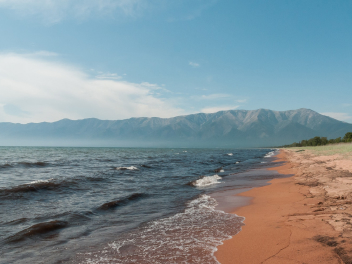
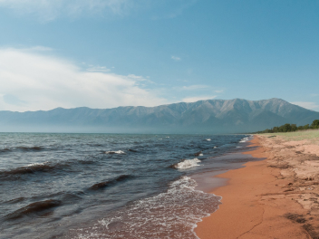

Куршская коса
URL
park-kosa.ru
Здесь, посреди лесов и песчаных дюн, вы сможете увидеть два
водных
горизонта — спокойного Куршского залива с одной стороны и подёрнутого рябью волн
Балтийского
моря с другой. Уникальная природная зона
на краю
российского анклава.
На этом Калининградская область не заканчивается.
Для путешественника
и
исследователя там же
по соседству — самая западная точка
России, Балтийская коса, —
и
немецкое
наследие россыпи небольших приморских городов. Атмосфера здешних мест исключает суету,
окуная
в
спокойствие природы и запах стального, прохладного моря.